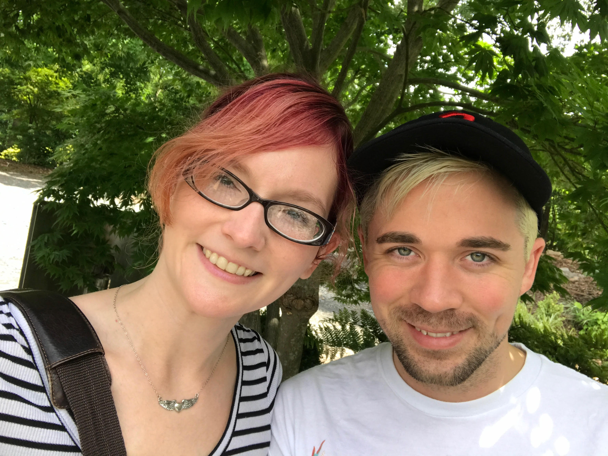

Hello and welcome to my quiet little corner of the internet. My name is Shelbie and when I'm not buried under a pile of chores/projects for home and work, I love to spend time in my kitchen testing out new recipes and even creating some of my own! Why the Gluten Free Panda? The simplest answer is that panda is my nickname (and has been for several years now) and as for the gluten free part, one of my best friends in the world (his name is Caleb for those who are curious) has Celiac's.
The longer, not so simple answer revolves around the concept of happiness; yours and that of the people around you and how the two contribute to one another. Have you ever seen the joy a simple tray of brownies can inspire in another person? The way it lights their whole face as the usual disappointed thought, "Another treat I can't eat..." is washed away by the realization that someone actually put forth the time and effort it took to make sure that everyone, even the person with a serious food allergy, gets to have a tasty little square of chocolate yumminess. I have.
It took me nearly two months of scouring the internet and GF food blogs for recipes before I finally worked up the courage to try one, and while that batch of brownies may not have been perfect, the happiness they inspired was totally worth a little added stress. It really did make my day!
All of that to say, I am still fairly new when it comes to the gluten free cooking game and I still have a lot to learn. However, I hope that this blog can be a place that I can share all of my experiments and discoveries (the successes and the failures) and where my audience and I can all learn and grow together.